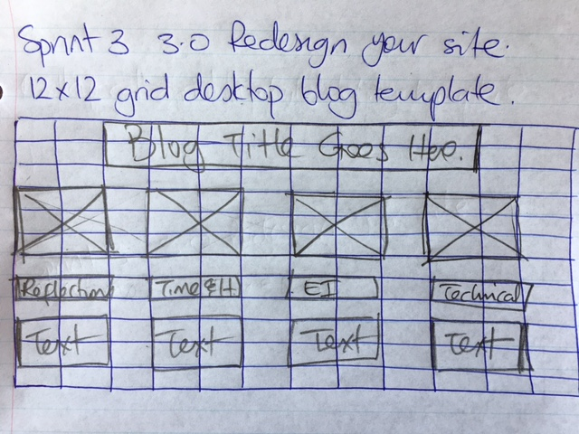
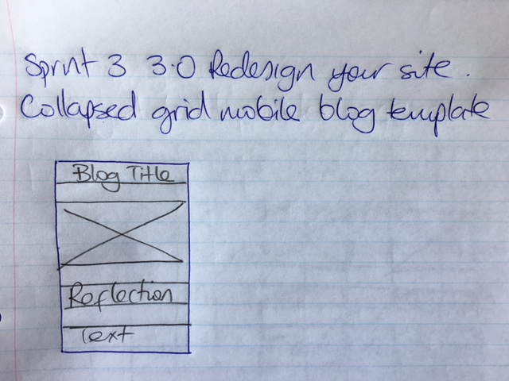
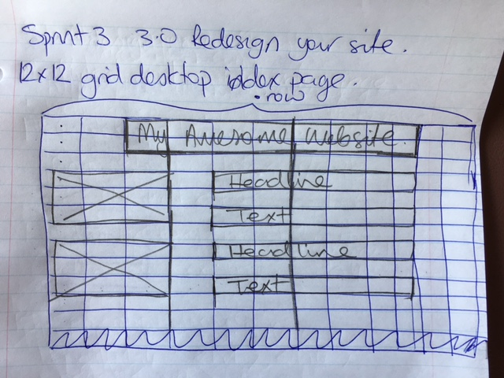
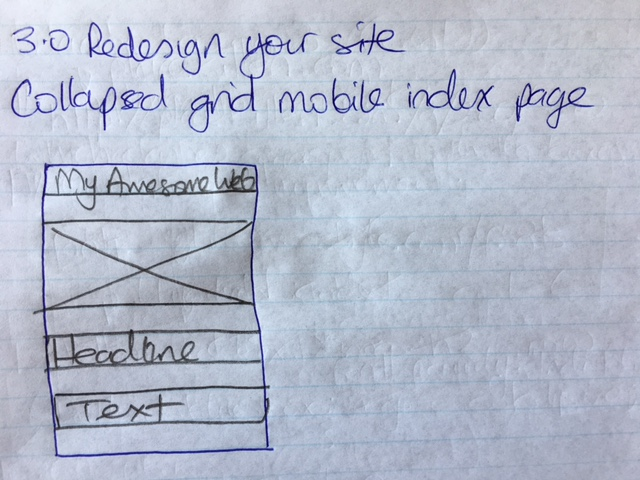

A responsive site is the one that adjusts to the browser in which the website is viewed, according to the screen resolution. It is important so that the viewer can have the same experience of interacting with the website regardless of the device or the screen size of the medium.
It is a design consideration that takes into account of the dimensions of a mobile screen first (the smallest resolution). Then the larger resolution is incrementally added. It is important because it covers the smallest possible screen the website can be viewed in, the minimum dimensions.
Frameworks are collections of 'classes' that make page layout easy to implement (Udacity)
In other words, a grouping of groups :-)
Wireframe is, as the name suggest, a frame made out of wire. So, it's minimal information displayed visually, to separate the different parts of your website
   